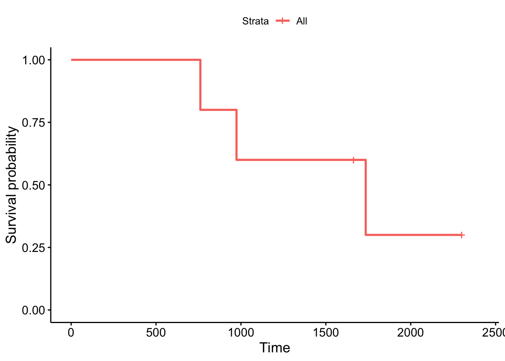

library(tidyverse)
library(survival)
library(survminer)
sub.dat <- data.frame(
startdate = as.Date(c("2019-10-01","2018-08-01","2020-05-01",
"2019-11-01","2021-05-01"), "%Y-%m-%d"),
enddate = as.Date(c("2022-06-01",NA,NA,"2024-08-01","2023-06-01"), "%Y-%m-%d"),
age = c(42,54,37,30,24),
home = c(1,0,1,1,0)
)
sub.dat <- sub.dat |>
mutate(subtime = ifelse(is.na(enddate),
Sys.Date()-startdate,
enddate-startdate),
cancelled = ifelse(is.na(enddate),0,1)
)
sub.fit.surv <- survfit(Surv(subtime, cancelled) ~ 1, data=sub.dat)
ggsurvplot(sub.fit.surv, conf.int=FALSE)